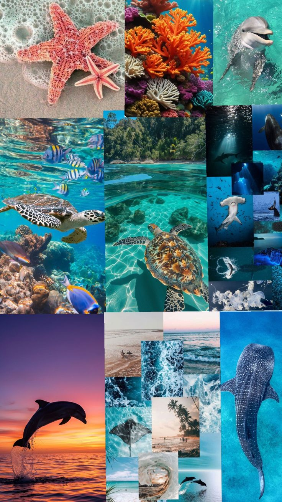

Práctica 2 - Sub 2

Los animales acuáticos son aquellos seres vivos que pasan toda o gran parte de su vida en el agua, ya sea en ambientes de agua dulce (ríos, lagos) o salada (mares, océanos). 🌊 Son organismos adaptados para sobrevivir en medios acuáticos, con características físicas y biológicas que les permiten respirar, desplazarse y alimentarse en ese entorno. - Ejemplos: peces, delfines, ballenas, tortugas marinas, medusas, pulpos, cocodrilos y aves como los pingüinos.